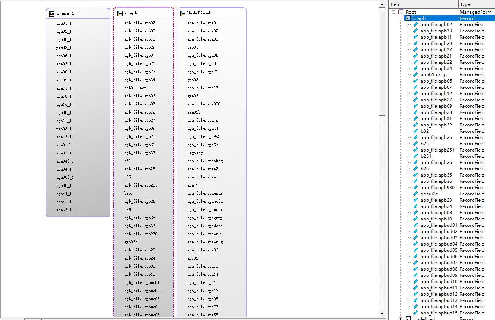
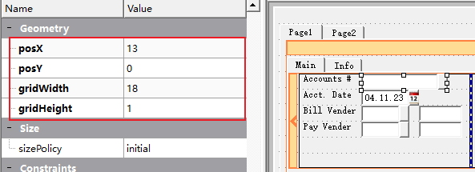
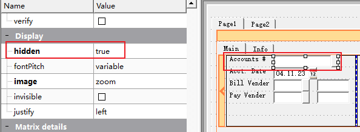
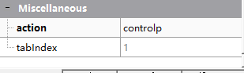
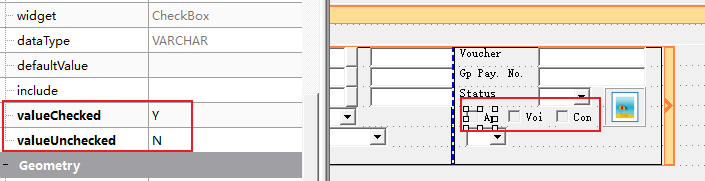
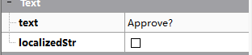
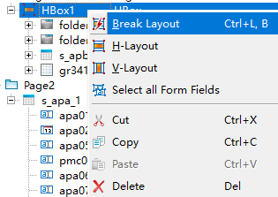

Structure 结构
Screen Record 画面字段结构

每一个添加到画面文件中的字段，都会自动添加到record记录上，每个表格会变为一组，不在表格中的字段顺序不需要关注。

表格record 的名称和字段的顺序，是你在4gl代码中使用时要注意的，所以这里顺序需要注意。
Properties 属性
name 字段名

字段的名称一般设置为表字段即可，apa01、apa_file.apa01 都是一样的，apa_file是表名，一般不需要，我们自己建立的时候，不需要加表名。
如果字段重复，也可以取其它名称，如果apa01_1、或者其它符合标识符规则的命名，如果在程序中要使用这个字段，请使用一个方便使用的字段名。
posX,poxY 字段位置
gridWidth，gridHeight 字段大小

字段的大小和位置，一般是我们用鼠标拖动的，但是也可以在这里做微调。
noEntry 不需录入
notNull 不为空
required 必须录入
case 大小写

设置字段录入时候的属性，设置为大写，录入字母时自动转化为大写
hidden 隐藏

设置后字段依然存在，但是用户无法看到此字段
image 图片（buttonEdit使用zoom）
action （buttonEdit 使用controlp）


只有ButtonEdit控件需要设置这两个数量，image设置开窗按钮的图片，action 是控制什么时候出发开窗这个动作
items （下拉框等空间使用）

下拉框空间中，可以通过items选项设置下拉框可以使用的元素
valueCheded、valueUncheked （单选框控件使用）

单选框，选中和未选中可以设置一个值，当选择时为Y，未选中为N。默认为1和0。
text （单选框等控件使用） 字段名称

单选框还可以设置text，会显示到单选框后
Tab Order 默认顺序

Tab Order控制在输入时，字段的顺序。当没有4gl代码强制控制字段顺序时，按entry或者tab键，会按照此序号顺序依次录入。
布局

多个容器在同一个层级的时候，需要将他们设置一个布局，垂直或者水平显示。

如果不小心设置错，可以点击布局 Break Layout后重新设置